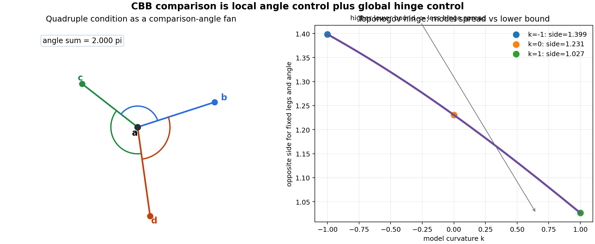
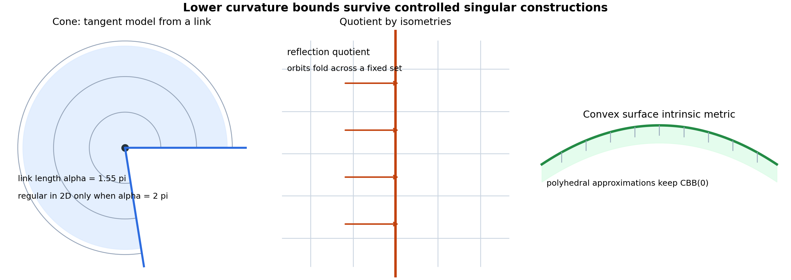
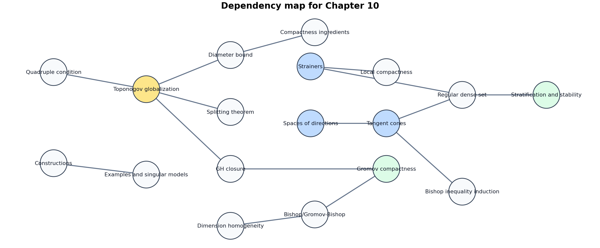
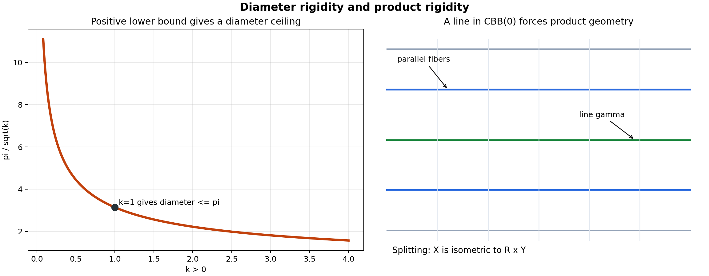
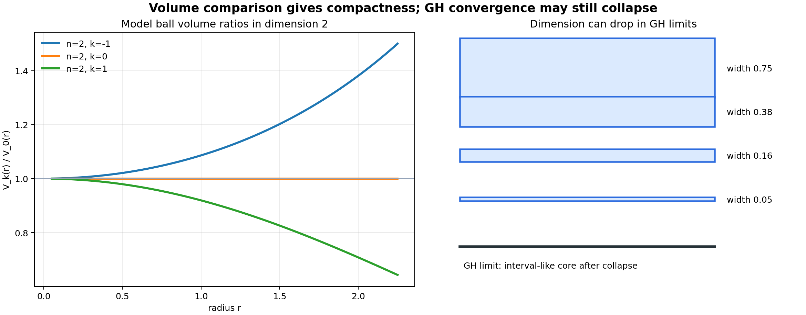
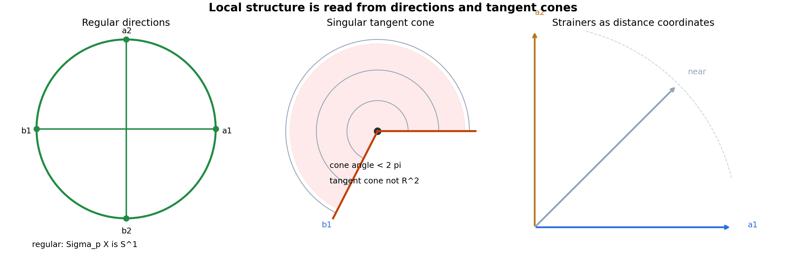

A Course in Metric Geometry, Chapter 10
From local angle fans to tangent cones.
Source grounding. Notebook: A-Course-in-Metric-Geometry/chapter-10-spaces-of-curvature-bounded-below/10-spaces-of-curvature-bounded-below.ipynb
Printed pages 351-404; PDF pages 366-419.

Choose \(p,x,y,z\) close together and compare the three model angles at \(p\).
The space may be singular, but it cannot pack more angular opening around \(p\) than the lower-bound model permits.
Two geodesic sides and an included angle determine a model hinge in \(M^2_\kappa\).
Measure the third side in the space, then compare it with the side in the constant-curvature model.
Local lab: toponogov-hinge-lab.html
Riemannian manifolds with sectional curvature \(\ge \kappa\).
Piecewise Euclidean or spherical spaces with link conditions.
Boundaries of convex bodies carry lower-curvature comparison behavior.

A neighborhood may look like \(C(\Sigma_p)\), where \(\Sigma_p\) is the link or space of directions.
The angular space controls whether the cone has lower curvature behavior. Bad links create too much angular room or the wrong triangle comparison.
Convexity supplies a comparison-friendly extrinsic picture. Intrinsic geodesics inherit lower-curvature constraints even when the surface is not smooth.
An isometric action can preserve comparison, while stabilizers compress directions and create singular quotient points.
length metric
orbit representatives
fixed points
new directions
A geodesic triangle or hinge in a length space with curvature bounded below by \(\kappa\).
Side and angle data are constrained by the triangle in the model plane \(M_\kappa^2\).
Every later rigidity theorem asks: what does Toponogov force if a comparison inequality is sharp?


Large triangles cannot spread farther apart than their model-space analogues when the lower bound is positive.
When the diameter reaches the model threshold, the space is forced toward a spherical suspension or another model-like shape.
A line is a complete geodesic that remains minimizing on every subinterval. It is a global certificate, not a local accident.
Under nonnegative lower curvature, the line organizes the space as an \(\mathbb{R}\)-factor times a transverse metric space.
Many independent directions behave like Euclidean coordinate axes at the chosen scale.
The direction space loses Euclidean shape, but still has metric structure.
Almost opposite pairs provide a practical dimension detector.
Lecture checkpoint. The chapter replaces smooth coordinates with comparison-based coordinates that survive singularities and limits.

Lower curvature bounds prevent excessive spreading, so ball volumes are compared against the model ball.
Curvature lower bounds survive appropriate Gromov-Hausdorff convergence.
Dimension, smoothness, and local topology may change in the limit.
Comparison geometry is robust enough for limits, but the limit may be singular.
Points \(a_i,b_i\) are chosen so the comparison angles at \(p\) behave like opposite coordinate directions.
Enough good pairs mean \(p\) has an almost Euclidean neighborhood at that scale.

Start with geodesic germs from \(p\). Measure the angle between two germs, then complete the resulting angular metric space.
A smooth point has a sphere of directions. A singular point has a different link, and that link changes the tangent cone.
Rescale \(d\) by factors tending to infinity around \(p\). The limit is a cone over \(\Sigma_pX\).
Euclidean tangent spaces are special tangent cones. Singular points keep the cone shape but change the link.
Quadruple fans and hinges test whether triangles obey the model lower bound.
Toponogov powers diameter, splitting, dimension, and volume consequences.
Strainers, spaces of directions, and tangent cones describe singular local geometry.
Which smooth comparison theorems survive unchanged? Which ones require new language because the tangent object is a cone rather than a vector space?